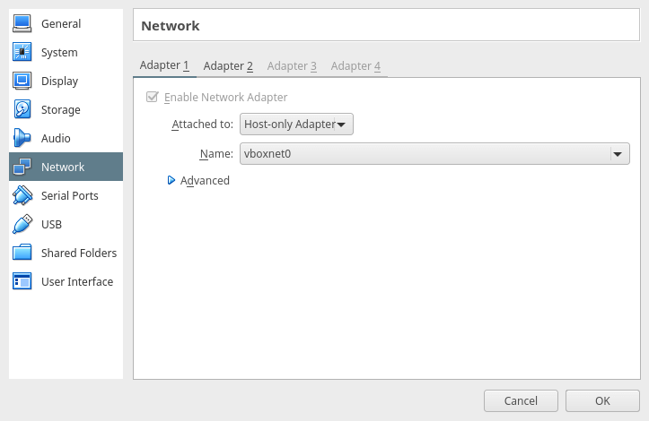
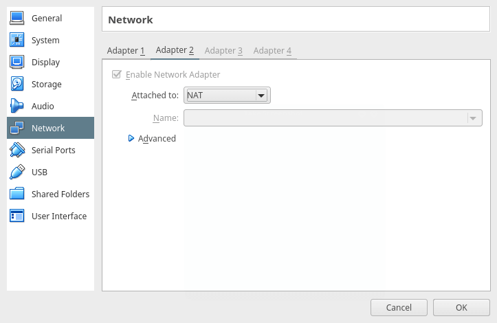
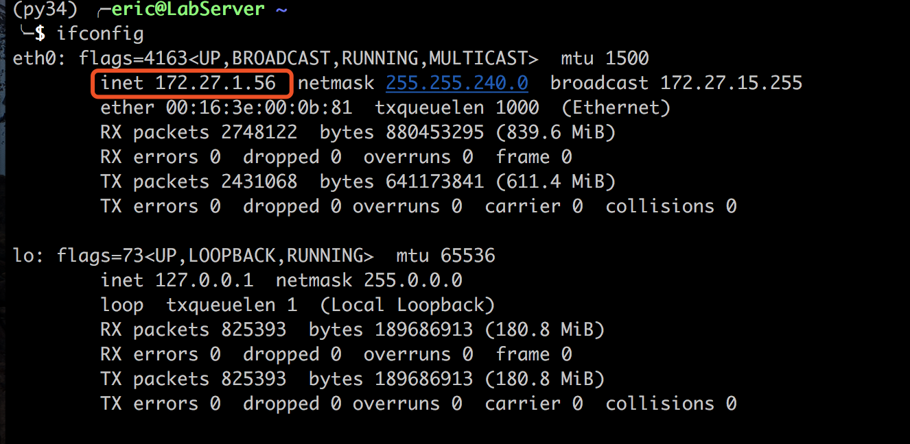

Virtual Machine Network setting
Network Interface Types in VM
There are 3 main types of network connection types for Vm:
- Host only
In this case, the vm can only be accessed via your computer and vm cannot connect to the internet which means you may have some problems when try to download or install some softwares.
- NAT
Simply speaking, VM using NAT can access internet but the VM and host computer are not in the same local area network so that your host computer may not connect to this VM unless you do some more configuration on your host computer.
- Bridge
The VM will be treated as a stand alone computer in your LAN. You can just treat it as a physical machine in the network. In this case, the VM can access the internet and the host computer can connect to VM as well.
How to config
- Shotdown the VM.
- Right click the VM icon and select *settings.


- Check the ip address of your VM:
ifconfig|more

- Connect to your VM using PuTTY.